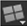
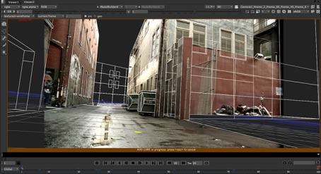
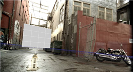
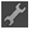
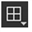
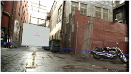
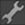
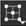
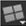

用导航打开主题
创建形状
要创建形状:
|
|
1。
|
双击 ModelBuilder 节点以打开其属性。
|
|
|
2.
|
使用形状创建菜单

在查看器左侧的 ModelBuilder 工具栏中，选择与您试图建模的对象最匹配的基本 3D 形状。您可以选择
点
,
卡
,
立方体
,
球体
,
锥
,
气缸
,和
多边形
(创建多边形时，单击查看器在需要的地方创建顶点，完成后，按
返回
)。
|
查看器窗口周围出现彩色边框，表示创建形状的操作正在进行中。

提示:
如果你想给一堵简单的墙建模，卡片可能是一个很好的起点。对于整个建筑，您可能需要使用立方体。

您可以调整形状 (例如，数量的行或列在其中),
形状默认值
标签。这些控件仅在创建形状时适用-您不能在事后调整它们。
|
|
3.
|
悬停在观众。您应该会看到光标下方出现一个黄色圆圈。您现在可以:
|
•
在查看器中单击以设置要创建新形状的位置。如果在空白空间上单击，将在指定的距离处创建形状
距离
控制。此值没有特定的单位; 低值将形状定位在靠近相机的位置，较高的值意味着更远。
•
按住
转变
并单击以捕捉到光标下任何几何图形的曲面。
•
向左或向右拖动鼠标可缩放形状。
选定的形状显示在查看器和 ModelBuilder 属性的场景列表中。
|
|
4.
|
如果创建的形状离相机太近或太远，请激活
编辑模式

在 ModelBuilder 工具栏中，并确保选择模式菜单设置为
选择对象

。然后，在查看器中选择形状，并拖动变换控制柄以重新定位它。
|

|
|
5.
|
如果你有一个以上的对象，你想在你的模型
Src
镜头，您可以重复上述步骤，使用单个 ModelBuilder 节点创建几个形状。
|
提示:
您也可以使用
创建
上的按钮
形状
默认值
选项卡创建形状。这与在查看器中使用形状创建菜单完全相同。
提示:
If you want to use 3D geometry as a visual reference and connected it to the
Geo
input, before creating a shape, you need to:
1. Activate
编辑模式

in the ModelBuilder toolbar on the left hand side of the Viewer and set the selection mode menu to
选择顶点

.
2. Drag in the Viewer to select vertices on the object that you want to model, bearing in mind that when you create a new shape, it’s automatically aligned with the selected vertices.
If you cannot see the object in the geo input, make sure
通过 Geo
is enabled in the ModelBuilder properties.
3. Use the shape creation menu

in the ModelBuilder toolbar
to select the basic 3D shape that best matches the object you are trying to model.

ModelBuilder creates the shape to align with the selected vertices.